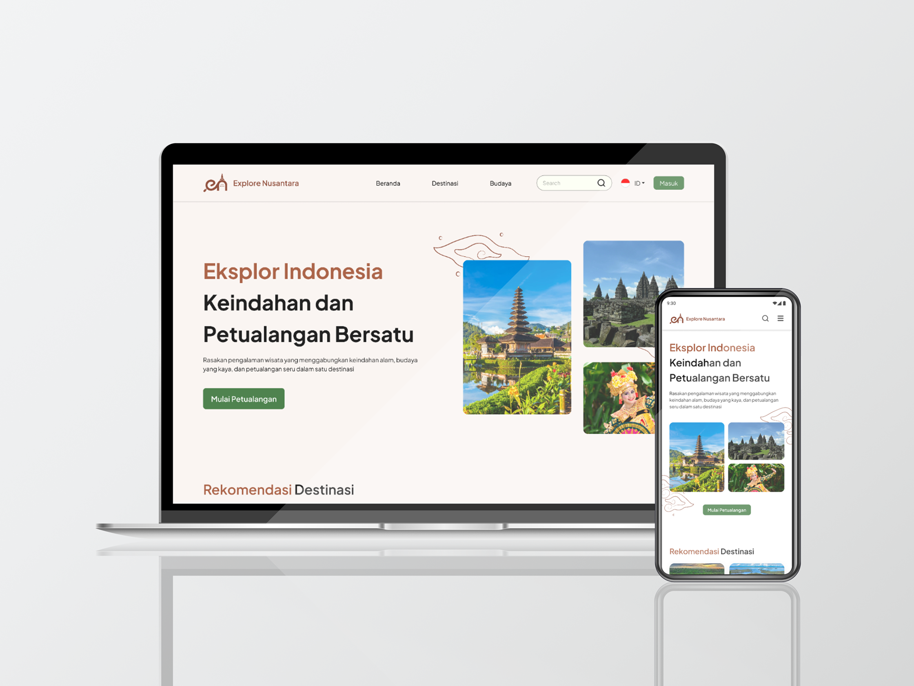

Explore Nusantara: Explore Tourist Attractions in Indonesia
Capstone Project – Coding Camp 2025 (Mar - Apr 2025)

My Role
- UI/UX Designer
- Front End Developer
Tools
- Figma (UI/UX Design)
- Visual Studio Code (Front End)
- Github
Project Overview
Explore Nusantara is a web-based platform that recommends Indonesian travel and cultural destinations using Machine Learning technology.
This application helps travelers discover the best destinations based on their personal preferences, interests, and needs.
Project Background
Indonesia, as the largest archipelagic country in the world, holds vast and diverse potential in tourism and cultural heritage. However, this great potential has not been fully optimized, particularly in terms of promoting and disseminating information about tourist destinations. Although the tourism industry continues to grow, there are several fundamental challenges, including:
- Lack of effective and evenly distributed digital marketing strategies, especially in regions that have yet to benefit from modern promotional infrastructure.
- Many beautiful and unique destinations in remote areas remain underexposed.
- Limited access to accurate and reliable information about tourist destinations, including pricing, location, accessibility, and local cultural activities.
- Tourists rely heavily on social media and blogs for information, which often lacks completeness or is not tailored to their preferences.
- Absence of an integrated digital platform that can provide personalized destination recommendations based on user interests and needs.
Solution
These challenges form the basis for developing a machine learning-based tourism and cultural recommendation website, which aims to:
- Provide complete and trustworthy travel information,
- Offer personalized destination recommendations (e.g., nature, culture, culinary),
- Increase the exposure of local destinations through an inclusive and adaptive digital approach,
- And help travelers plan more meaningful and interest-aligned trips.
Final Design